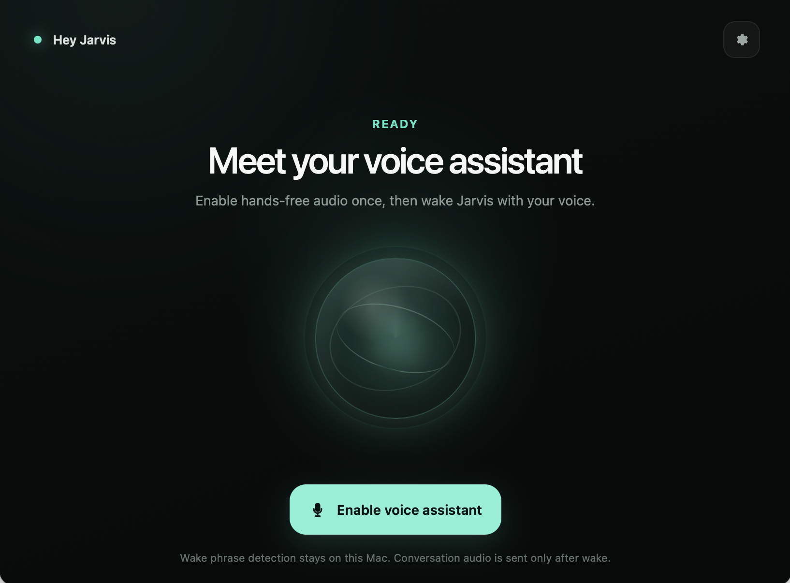

The acknowledgement heard itself.
Draining speaker audio removed the user's first words, so playback frames are consumed without triggering capture, a bounded pre-roll is kept, and sustained speech gates the restored question opening.
Meetup talk · 10 minutes · English
Hey Jarvis
A voice demo became useful only after microphones, speakers, lock screen behavior, and AI-assisted recovery loops were treated as product boundaries instead of demo polish.

Reading mode
Scroll all six scenes as a normal web page.
Present mode is optional. Reading mode works without JavaScript.
01 / The problem
I wanted a genuinely hands-free Mac assistant: say "Hey Jarvis," ask a question, follow up, interrupt a long answer, say goodbye, and trust that it has returned to local wake listening, even when the Mac is locked.
The first demo worked quickly. The daily workflow emerged only after microphones, speakers, lock screen behavior, and long-running lifecycle failures became part of the design.
02 / The useful unit
The useful unit is not one answer. It is one closed loop.
Before wake: local only · After wake: OpenAI Realtime · After goodbye: local again
03 / The architecture
Rule 1
Nothing leaves the Mac before wake, protecting privacy and
avoiding idle Realtime cost.
Rule 2
Python and WKWebView never own live microphone capture at
the same time.
04 / What failed
Draining speaker audio removed the user's first words, so playback frames are consumed without triggering capture, a bounded pre-roll is kept, and sustained speech gates the restored question opening.
Acknowledgement playback and Realtime initialization can race, so "I'm here" is emitted only after a two-condition readiness barrier confirms the acknowledgement can play and the live session is actually ready. The greeting became a verifiable system promise instead of hopeful polish.
Wake listening now holds only the bounded idle-sleep assertion it needs, keeps a disabled warm microphone track, stops safely for manual sleep or lid close, and attempts one bounded recovery after resume.
Audio boundary · Readiness barrier · Operating-system behavior
05 / The workflow
Real-device failure -> SPEC boundary -> one verifiable feature -> Coding Agent -> automated tests and fake smoke -> cold-start Evaluator -> human audio/device judgment -> durable repository evidence
AI is useful for reading historical code, constructing synthetic-audio regressions, expanding state-machine tests, adding diagnostics, checking protocols and timeouts, and resuming from repository state.
Humans still judge whether an acknowledgement sounds natural, whether interruption works in a real room, whether lock-screen behavior is genuinely usable, when failure should close conservatively, and whether added complexity earns its place.
AI speeds up hypothesis -> implementation -> test. Real microphones, speakers, and human hearing remain the final oracle.
06 / The takeaway
Save each real failure as a regression and durable piece of evidence. AI's highest value is not the first generation; it is helping the team repeatedly correct a bounded system without losing context.
In your AI workflow, which outcomes can be evaluated automatically, and which still require human judgment?
The public evaluation build is for Apple Silicon Macs on macOS 14 or later, is unsigned and not notarized, requires your own OpenAI API key, and is not a general consumer release.
Use Arrow keys, Page Up/Page Down, Home, End, or Space. Press Escape to exit.